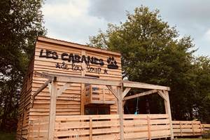

Spécialement conçues pour les amoureux de la nature, les Cabanes de Lou-Loup vous accueilleront dans un cadre de verdure exceptionnel au milieu d'une meute de Huskies.
Restaurant et bar traditionnel avec une touche irlandaise situé dans la Creuse (23) à la Celle-Dunoise. Nous proposons des plats l carte ou en menu du jour avec des recettes traditionnelles mais également de la cuisine de pub avec nos classiques comme des burgers ou Fish'n chips.
Ici tout est fait maison !
Côté bar, nous avons une large sélection de bières et whiskeys. Nous proposons des soirées musicales toute l'année et l'été, vous pouvez profiter de notre grand jardin au bord de la Creuse.